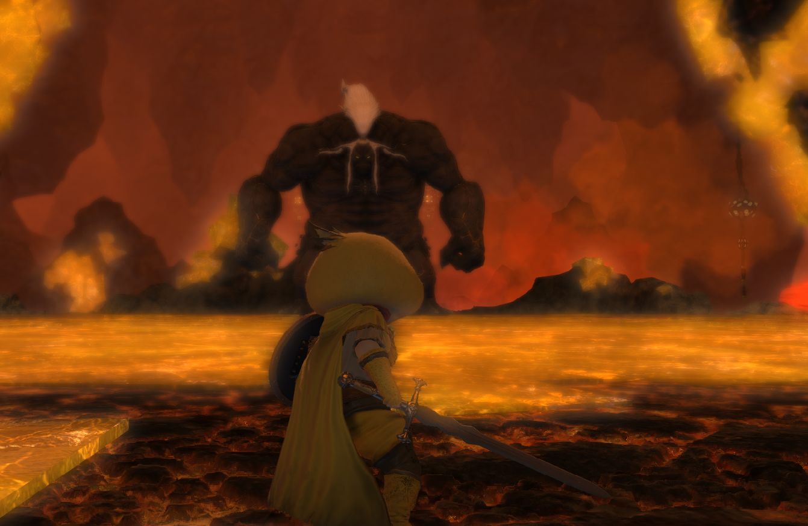

Binding Coil Of Bahamut
How to Unlock
Players can unlock The Binding Coil of Bahamut after reaching level 50 and completing Trial The Bowl of Embers (Hard), Trial The Howling Eye (Hard) and Trial The Navel (Hard).
Afterwards players can talk to Urianger in The Waking Sands (X:6.0, Y:4.9) to start the Bahamut Quests chain with a quest titled Feature QuestPrimal Awakening and unlock the raids.
Players may proceed to any of the five floors in this raid tier after unlocking them, although the floors are intended to be done in order for story purposes. To continue the questline,
complete Raid The Binding Coil of Bahamut - Turn 5 to unlock Feature Quest
Video Guide
Watch the video guide for more details: